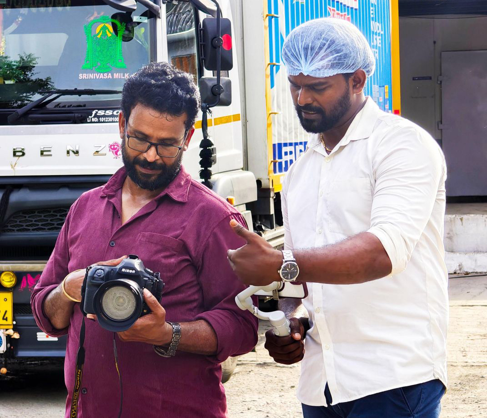
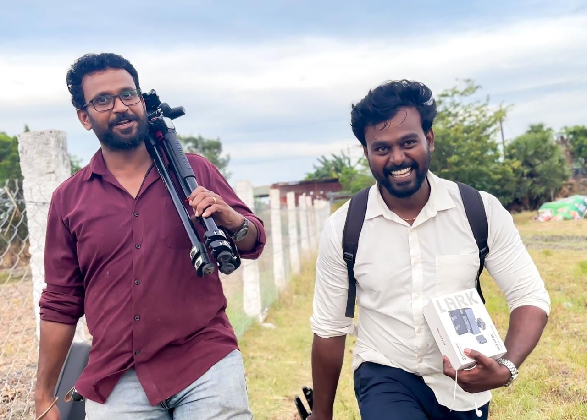
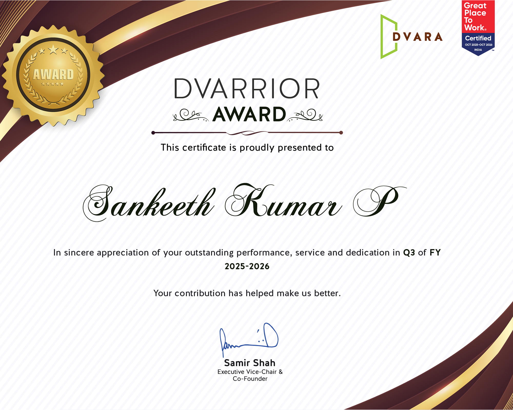
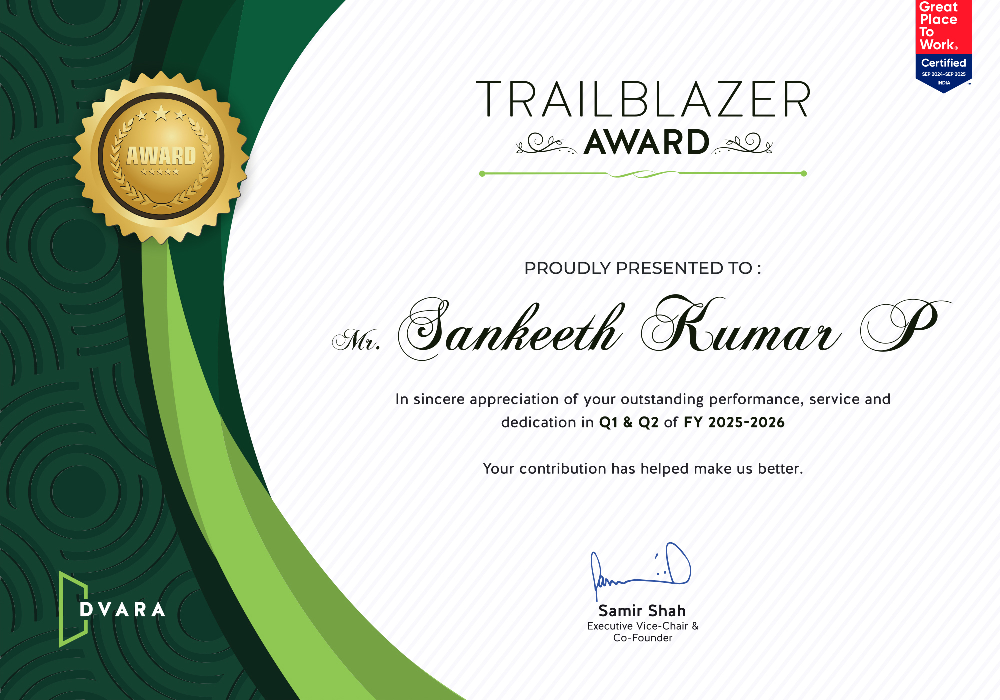
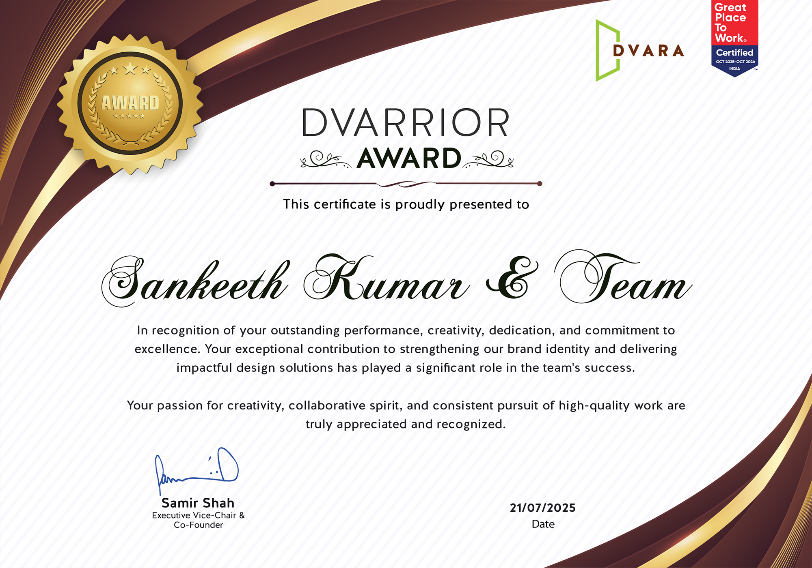
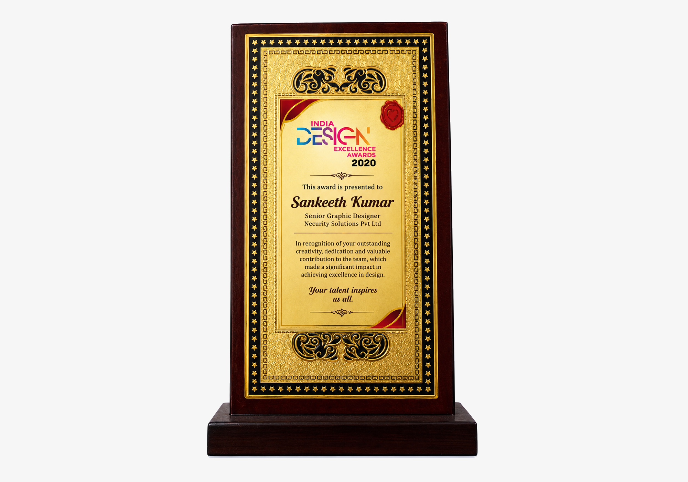

About Me
9+ years designing the work now building
AI-augmented teams that ship it faster
I'm Sanketh Kumar, a Assistant Design Manager based in Chennai. Over 9+ years and four roles I've grown from hands-on production into creative direction currently running brand direction for 50+ campaigns and a 5-person creative team at Dvara Holdings, where I built an AI-augmented design workflow that cut production turnaround by 30%.
Experience
Held
Delivered

My Story
From production artist to AI-augmented design leader
I started out doing hands-on production at TNQ Technologies, print and digital communications, managing execution end to end. From there I moved into UI design, building responsive layouts and Figma prototypes that cut down rework before a project ever reached a developer.
Over 9+ years and four roles, I've moved from executing briefs to owning them: as Assistant Design Manager at Dvara Holdings I now direct brand strategy and visual direction across 50+ campaigns, lead and mentor a 5-designer creative team, and align 10+ cross-functional stakeholders on positioning and campaign ideation — while running video post-production and motion graphics end to end.
The shift I'm proudest of is building an AI-augmented creative workflow — weaving Adobe Firefly, Midjourney, DALL·E, Runway ML and prompt engineering into daily production — that cut campaign turnaround by 30% without cutting corners on quality. I care as much about how a team works as what it ships, and that's the part of the job I'm looking to keep doing more of in a managerial role.

Path So Far
Four roles, one throughline: growing scope and ownership
-
12/2016 – 03/2018
Graphic Design Specialist, TNQ Technologies
Produced print and digital communications for internal and external stakeholders, managing design execution end to end.
-
09/2018 – 03/2020
UI Designer, Vanan Online Services Inc.
Designed responsive UI layouts and web interfaces; cut development rework by building low-fidelity wireframes and interactive Figma prototypes before handoff.
-
03/2020 – 07/2021
Senior Graphic Designer, Necurity Solutions
Delivered corporate branding and client-facing creatives in Adobe Creative Suite; produced social assets, brochures and ads for integrated campaigns.
-
09/2021 – Present
Assistant Design Manager, Dvara Holdings
Directs brand strategy across 50+ campaigns, leads a 5-designer creative team, and built the AI-augmented workflow that cut turnaround 30%.
How I Lead
What I bring to a managerial role
Team Development
Mentors junior and mid-level designers with regular feedback, portfolio reviews, and hands-on pairing on tricky briefs.
Creative & Brand Strategy
Owns brand strategy end to end — translating business goals into a visual language the whole team can execute against.
Stakeholder Management
Runs client and cross-functional workshops, presents concepts to leadership, and keeps every stakeholder aligned on scope and timeline.
Process & Delivery
Builds review cycles and file structures that keep fast-moving teams organised, so deadlines don't come at the cost of quality.
Toolkit
Fluent across the tools my team works in
Design & Branding
Figma, Adobe Illustrator, Photoshop, InDesign
Motion & Video
After Effects, Premiere Pro, DaVinci Resolve
AI-Augmented Design
Adobe Firefly, Midjourney, DALL·E, Photoshop Generative Fill, Runway ML, prompt engineering
Collaboration
Microsoft Office Suite, project & team coordination, client workshops
Awards & Recognition
Recognized for the work and the workflow

Dvarrior Award
Q3 FY25-26

Trailblazer Award
Q1 & Q2 FY25-26

Dvarrior Team Award
Q2 FY24-26

DESIGN EXCELLENCE AWARDS
2020
What Teams Say
Trusted to lead, not just deliver
Sanketh brought a rare mix of strategic thinking and hands-on craft to our rebrand. He led the team through a tight deadline without ever compromising on quality, and the final identity system still holds up two years later.
Priya Nair
Marketing Director, Aster Health
The motion work Sanketh delivered for our product launch was the best piece of creative we shipped that year. Clear direction, fast turnarounds, and a genuine understanding of what would make viewers stop scrolling.
Karthik Iyer
Founder, Navis Arca
Looking for someone to lead your design team?
Let's talk about the role — and how nine years of hands-on design plus team leadership can help you ship better work, faster.